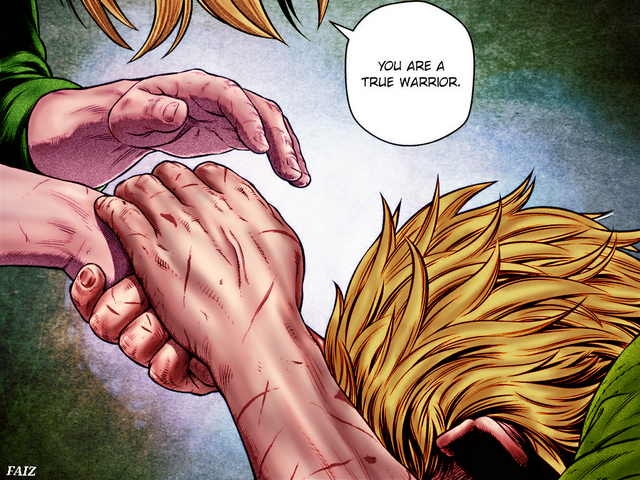
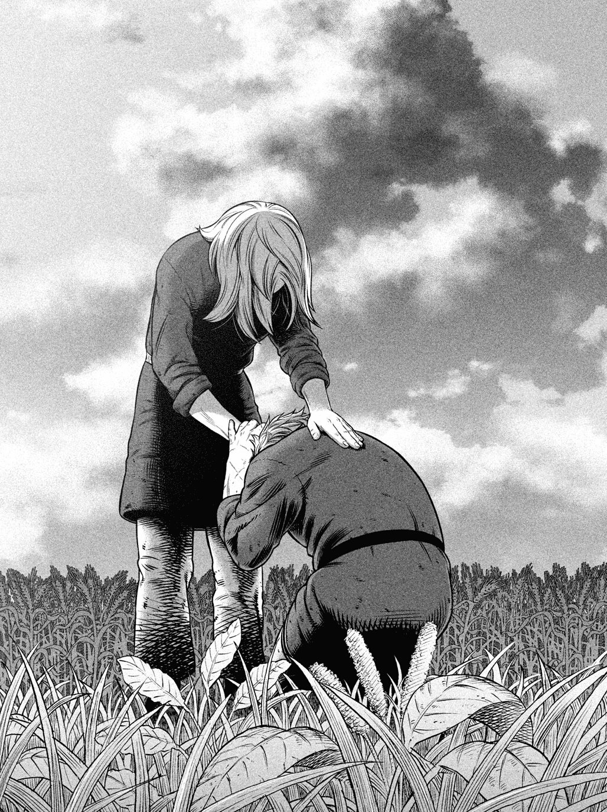
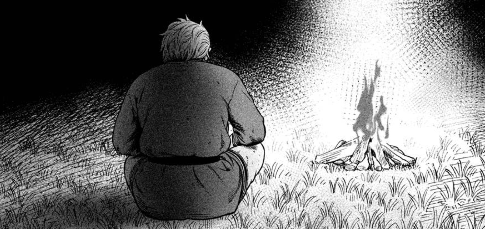
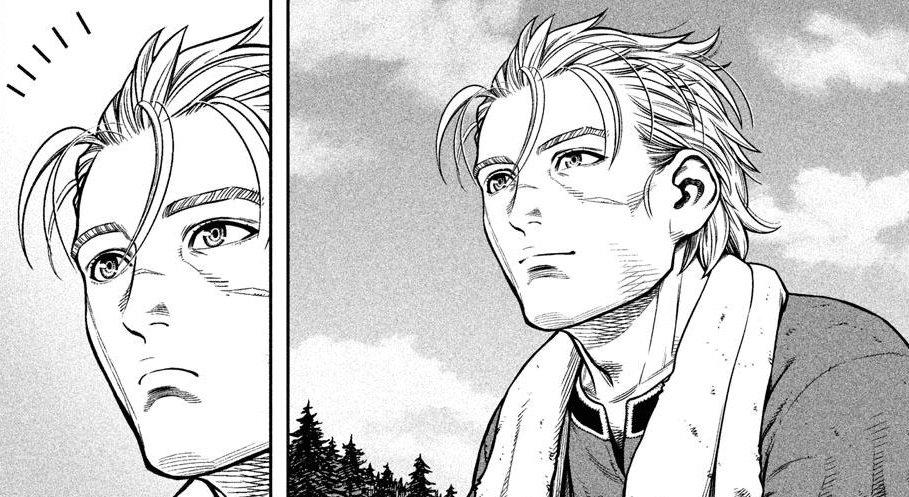

Vinland Arc(2020)

Plot
The Vinland Saga Arc is the concluding arc of the magnificent series.
This arc is named after the main series, which emphasizes that it is the climax of Thorfinn's storyline.
It begins with chapter 167 and is not yet complete.
However, the Vinland Arc, according to mangaka Makoto Yukimura, would have more than 1000 pages and 50 chapters.
Voyage to the West is the title of the final arc's first chapter.
The narrative follows Thorfinn as he travels to Vinland, where he encounters more challenges than he may have already imagined.
As much as it is disheartening that the final arc of the manga series will end soon, fans of
Vinland Saga are enthusiastic to witness the final voyage and grand conclusion to the epic story of the Vinland Saga,
which is expected to be the best arc among all the others because it will wrap up the entire tale.
Arc panels


